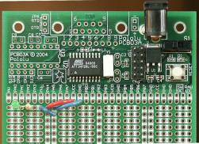

The Atmel AVR family is a set of powerful microcontrollers that were designed to be used with the C programming language. You can now can compile a C program for the AVRs with gcc, then load the program onto using an inexpensive programmer and free tools. For Linux users who want to work on digital electronics, robotics, and automation, these chips are the way to go. This page is a step-by-step tutorial that presents a simple, cheap way to start experimenting with AVRs.
Specifically, on this page you'll find instructions for assembling and programming the AVR ATTiny26 using a prototyping board from Pololu and a few assorted parts from Digi-key. Some soldering experience and the ability to install programs on your Linux computer are required. It will cost you about $60 and 50M of disk space, and you'll be up and running about three hours after you unpack the electronics.
Order everything you don't already have from Pololu:
| Part | Price |
|---|---|
| ATtiny26 prototyping board | $20.00 |
| Tools: soldering iron, wire strippers | 16.75 |
and order these parts from Digi-key:
| Part | Price |
|---|---|
| ATAVRISP-ND programmer | $29.00 |
| 490-1208-ND 4MHz resonator | 0.33 |
| S1012-15-ND 0.1" male header | 0.69 |
| EG1903-ND SPDT switch | 0.71 |
| CP-102A-ND 2.1mm power jack | 0.38 |
| T405-P5P-ND 2.1mm DC power transformer | 5.08 |
| 516-1293-ND green LED | 0.36 |
| 1.0KQBK-ND 1k resistor | 0.28 |
You may want to make substitutions on some of these parts (e.g. faster resonator) or order additional electronics for your project. You will additionally need solder and a small amount of wire to make connections on the proto board.
After familiarizing yourself with your new electronics, solder the, button, switch, power connector, header, and resonator into the clearly marked locations on the proto board. You should be able to plug in power and see the tiny green LED light up when you turn on the power switch. Then add the larger LED from digikey and the resistor as shown in the picture. Remember to put the short lead of the LED below, since current will be flowing out of port RA0 and through the LED to GND. Add wires to supply power and ground to the long buses on the left side of the board, as shown.
Test your programmer. For this, you will need to plug the header on the programmer ribbon cable into your board. As far as I can tell there is no way to figure out the correct orientation of the header without opening the programmer up, so be careful. On mine the orientation that worked was with the red side of the ribbon cable down. Attach it this way, turn on the power switch, and if you don't see a red light on the programmer, immediately turn off power and inspect the connections.
You'll need a computer running linux to get gcc running; you could probably also set this stuff up under cygwin. I used Slackware 10, but the same instructions should work on any modern linux system.
Get the latest binutils from ftp://ftp.gnu.org/gnu/binutils/.
Install with
./configure --target=avr --prefix=/usr/local/atmel
make
make install
Get the latest gcc-core from ftp://ftp.gnu.org/gnu/gcc/.
Install with
export PATH=/usr/local/atmel/bin:$PATH
./configure --target=avr --prefix=/usr/local/atmel --enable-language=c
make
make install
Get the latest avr-libc.
This package is base code for the AVR, so it needs to know the
location of the AVR gcc and binutils. Edit the PREFIX line of
the file doconf to refer to
/usr/local/atmel, then install with
./doconf
./domake install
Get the latest Uisp, the program you will use to access the AVRISP. Install with
./configure
make
make install
Save this code as blink.c:
#include <avr/io.h>
/* at 4 MHz we get 1us per 4 instructions */
inline void delayus() { asm volatile("nop\nnop\nnop\nnop"); }
void delayms(uint16_t millis) {
uint16_t loop;
while ( millis ) {
loop = 100;
while (loop) {
/* 20us of delays */
delayus(); delayus(); delayus(); delayus(); delayus();
delayus(); delayus(); delayus(); delayus(); delayus();
loop --;
}
millis--;
}
}
int main(void) {
sbi(DDRA,PA0); /* set PA0 to output */
while(1) {
sbi(PORTA,PA0); /* LED on */
delayms(100);
cbi(PORTA,PA0); /* LED off */
delayms(900);
}
return 0;
}
And save this as Makefile:
CC=/usr/local/atmel/bin/avr-gcc CFLAGS=-g -Os -Wall -mcall-prologues -mmcu=attiny26 OBJ2HEX=/usr/local/atmel/bin/avr-objcopy UISP=/usr/local/atmel/bin/uisp TARGET=blink program : $(TARGET).hex $(UISP) -dprog=stk500 -dserial=/dev/ttyS1 --erase -dpart=attiny26 $(UISP) -dprog=stk500 -dserial=/dev/ttyS1 --upload -dpart=attiny26 \ if=$(TARGET).hex -v=2 $(UISP) -dprog=stk500 -dserial=/dev/ttyS1 -dpart=attiny26 \ --wr_fuse_l=0xee %.obj : %.o $(CC) $(CFLAGS) $< -o $@ %.hex : %.obj $(OBJ2HEX) -R .eeprom -O ihex $< $@ clean : rm -f *.hex *.obj *.o
With the programmer plugged in, type make. Your LED
should now start to blink!
sbi.
Finally, much of this page was inspired by Guido Socher's 2002 article on avr-gcc. It's slightly out of date now but still contains a lot of useful details that I haven't gone into here.
{kind=link}